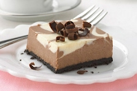
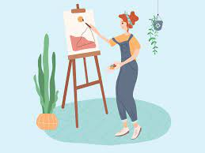
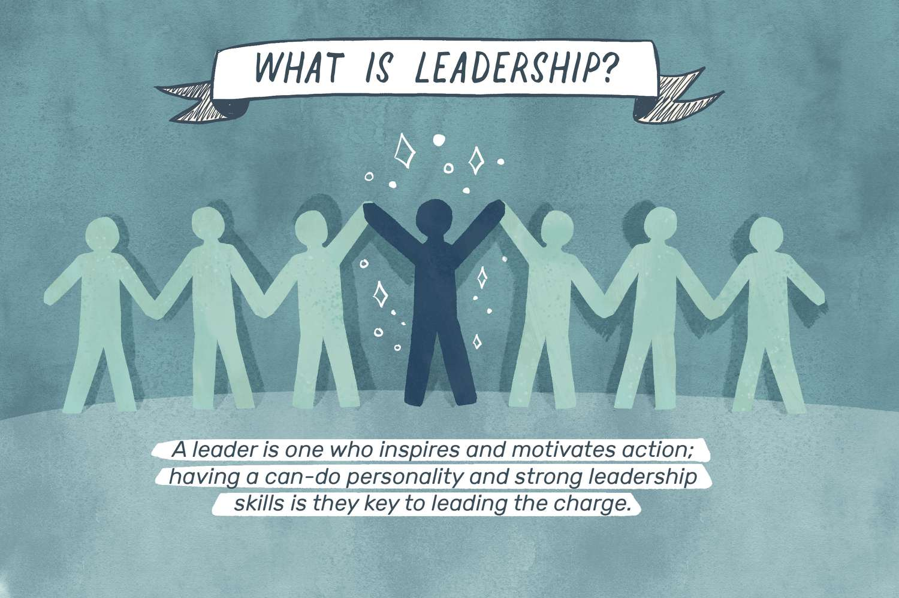
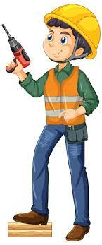

Hobbies
A hobby is voluntary work done for fun in your spare time. Many popular hobbies include gardening, stamp collecting, coin collecting, photography, and so on. My favourite hobby, however, is gardening. I began when I was nine years old. I own a small plot of land next to our house. I cultivate gardening there. Every day, I spend twenty minutes gardening. After returning from my morning walk, I go to my garden with a spade and a bucket of water. I prepare the soil, prune the plants, and water them. I also use insecticides and fertilisers. My heart leaps with joy when I see the plants swaying in the wind. I feel heavenly pleasure as I watch them grow day by day. I love walking,reading,baking,cycling,sleeping,playing cricket,baseball,gardening,collecting coins and writing.It is a great way to workout without feeling like you are. We love visiting new climbing destinations and gyms in new cities we visit. Here are some beginner climbing tips for getting started and a gift guide for climbers if you want to pick up some gear. I love reading different books.Books are my ultimate friend. I like spending time with them. Whether it is the mood to increase knowledge or entertainment they are always available. Read as much as you want, when you want, read whatever you want. No limits, limitless topics, unlimited availability. Reading stories, jokes, novels, dramas, biographies, travelogues, everything is not only interesting to humans but also enlightening. Books are our best friends, it never deceives us. Books never allow the feeling of loneliness. But a caution about the books is necessary. According to our age, we should study only useful books on appropriate subjects.

Reading
Books are my ultimate friend. I like spending time with them. Whether it is the mood to increase knowledge or entertainment they are always available. Read as much as you want, when you want, read whatever you want. No limits, limitless topics, unlimited availability. Reading stories, jokes, novels, dramas, biographies, travelogues, everything is not only interesting to humans but also enlightening. Books are our best friends, it never deceives us. Books never allow the feeling of loneliness. But a caution about the books is necessary. According to our age, we should study only useful books on appropriate subjects.

Baking
Baking is a type of cooking, a hobby devoured by many. Baking usually consists of using the oven, sometimes the stove. There's many different food items you can bake, such as cake, muffins, cookies, pies, and much more. The best thing about baking, is that you get to eat what you make. You can also decorate the goodies you make, with icing or whatever you desire. Baking also helps me release my stress. It takes me to a different world, where I can just mix the batter, and get messy, not caring about anything. After all, baking DOES involve a big mess. Each time I bake, I feel a spark of joy in my soul. It felt like I was born to mix flour and make magic from it. I have other hobbies, no doubt, but none can compare to my love for baking.
Cycling
A hobby is nothing but a gentle and pleasant occupation designed to take the tired brain off the burden of the main task. It is not one is main business or occupation; it is an alternative mental occupation. I believe that every person should have a hobby because, without a favorite occupation, it is just boring to live. Hobby helps to develop a person, because, while doing what he likes, a person always strives to learn something new about his favorite occupation, often communicates with other people who are addicted to the same thing. A person who has a hobby tries to read. Everyone has a favorite hobby. I have also a favorite hobby. My favorite hobby is cycling. It is my favorite sports to do whenever I have free time. Not just because of it good for our health, if we also can enjoy the scenery and feel the natural winds. It is a good exercise to improve family relationships or a friend’s relationships. Most of the time I am cycling with my best friend, while we cycling we were chatting or even gossiping about anything. Cycling is easier on the joints than running and can be enjoyed all seasons, unlike swimming. All-in-all cycling is a beneficial physical activity and hobby. Cycling is a good hobby since it makes the body healthy. It is also a type of exercising. One can adopt this hobby since it does not fool away our much time and can be done anywhere and anytime.
Gardening
Gardening is my favorite hobby. I think, it is the best of all the hobbies which one can follow with a lot of amusement and benefit to health. I have laid out a smaller of amusement and benefit to health. I have laid out a smaller garden in front of my house. When I sit in my smaller garden a great pleasure. Sweet fragrant flowers of different hues sweeten as my mind. It helps me in many ways. While working in the garden not only do I spend my time in a better way but also improve my health as thus I spend my time in better way but also improve my health as thus I take exercise unwillingly. It brings me close to Nature and I feel lost like Wordsworth in the beauty of blooms and blossoms around me.
“Gardening brings me to God’s nature, plants, flowers, seeds, vegetables, fruits, on mother Earth.”
My hobby is gardening that I enjoy tremendously and like from the heart. I feel naturally attached to the world of Nature. Outdoor life is surely better than our indoor life of modern comforts and luxuries. It is only when the weather is extremely hot or cold that I like to stay indoors. But when the weather is fine and pleasant, I rush out to stay in the open atmosphere and natural surroundings.
Skills
i have a good skill in doing arts. It is a great way to workout without feeling like you are. We love visiting new climbing destinations and gyms in new cities we visit. Here are some beginner climbing tips for getting started and a gift guide for climbers if you want to pick up some gear.

Creativity
For as long as humanity has existed, art has been part of our lives. For many years, people have been creating and enjoying art. It expresses emotions or expression of life. It is one such creation that enables interpretation of any kind. It is a skill that applies to music, painting, poetry, dance and more. Moreover, nature is no less than art. For instance, if nature creates something unique, it is also art. Artists use their artwork for passing along their feelings.
Time Management
Time stops for none and is equal for all. Everyone has the same 24 hours in a day but some people make better use of time than others. This is one of the most important reasons some people are experts in what they do. Therefore, time management plays a vital role in both personal as well as professional lives.
“Time is not the main thing, it is the only thing.”
Time management is basically an effort made consciously to spend a certain amount of time performing a task efficiently. Furthermore, it is estimated that to have better results, one needs to do productive work. Thus, productivity is the key focus here. Moreover, maintaining a careful balance between professional life, social life, and any other hobbies or activities is a great example of efficient time management. Time management is also crucial for students from an academic perspective as students require to cover many subjects. Thus, efficiently managing time is an important skill in everyone’s life. Around the world, there are two views for time management – linear time view and multi-active time view. The linear time view is predominant in America, Germany and England, and it aims at completing one task at a time.

Leadership
A leader is someone who will inspire, motivate and give a sense of purpose and direction to his or her followers. A leader will have to face many hurdles in life from various sections including his own followers. But there comes a point where a leader should choose between his followers and achieving his goals. And that is where the true test for a leader comes into the picture. The ability to inspire people and make them fall in love with his or her ideologies and goals is a testament for a good leadership quality especially when there are troubling times during his or her tenure. The role of Leadership is one of the most critical aspects of management because it assists individuals or businesses in increasing efficiency and attaining objectives. Leadership can mean different things to diverse writers.
Problem Solving
The role of Leadership is one of the most critical aspects of management because it assists individuals or businesses in increasing efficiency and attaining objectives. Leadership can mean different things to diverse writers. Creative problem-solving skills have several uses. Often, people associate creative problem-solving skills in dealing with difficulties and problems. However, creative problem-solving skills are needed for performance in any area of an organization. A problem is any situation that deviates the currents situation from the expected future situations. Finding opportunities is such cases is hence the case of problems solving. According to Whetten, there are four main conceptual blocks in decision making and problem-solving. These blocks include compression, commitment, consistency, and complacency. Commitment to solving proving applies at the point that when an individual is solving a problem, they only see it as a variation of the past problem. In such cases, many individuals opt to use the same approach used in the previous problem. Commitment is defined from the “one-fits-all” approach. In organizations, it is tempting to utilize a similar solution. Most of these businesses argue from the point that people get to learn from their experiences. When it comes to problems, the managers tend to rely on the experience to guide on the solutions they give to the problems. The business environment is dynamic.

Professions
Fashion designing is good profession. It is a great way to workout without feeling like you are. We love visiting new climbing destinations and gyms in new cities we visit. Here are some beginner climbing tips for getting started and a gift guide for climbers if you want to pick up some gear.
Fashion Designer
In life I want to become a fashion designer. My goals are to create clothing that is for all sizes, ages, and genders. In my clothing I want t show a creative side of my art ability and I want to make my clothing affordable for all as well. I think I influenced myself to wanting to become a fashion designer because I have a passion for art and wanting to become a fashion designer. I enjoy making sketches of clothing that one day will hopefully be available in stores all over. Fashion designing in my opinion is a way to express the unique side of your creativity, also fashion designing is a career that I believe I can achieve in so highly if I stay focused and continue to putting forth effort in my creations. In life I want to become a fashion designer. My goals are to create clothing that is for all sizes, ages, and genders. In my clothing I want t show a creative side of my art ability and I want to make my clothing affordable for all as well. I think I influenced myself to wanting to become a fashion designer because I have a passion for art and wanting to become a fashion designer. I enjoy making sketches of clothing that one day will hopefully be available in stores all over. Fashion designing in my opinion is a way to express the unique side of your creativity, also fashion designing is a career that I believe I can achieve in so highly if I stay focused and continue to putting forth effort in my creations.

Doctor
Doctors have a very noble profession. In addition, they are equipped with comprehensive knowledge and devices that enable them to diagnose and treat their patients with correct procedures. Doctors require medical staffs that help them in performing their treatment. They are very proficient and have proved their importance time and again for mankind. Doctors have a very noble profession. In addition, they are equipped with comprehensive knowledge and devices that enable them to diagnose and treat their patients with correct procedures. Doctors require medical staffs that help them in performing their treatment. They are very proficient and have proved their importance time and again for mankind. Doctors have a very noble profession. In addition, they are equipped with comprehensive knowledge and devices that enable them to diagnose and treat their patients with correct procedures. Doctors require medical staffs that help them in performing their treatment. They are very proficient and have proved their importance time and again for mankind.
Scientist
My aim in life is to be a scientist. I have always been fascinated by science as a subject and my main attraction was the application of science to various things. Science has advanced to a great extent in the recent times and so have the scientists. The miracles that science performs fascinate me and I want to be a scientist to conduct the same miracles and develop solutions for problems around us. My aim in life is to be a scientist. I have always been fascinated by science as a subject and my main attraction was the application of science to various things. Science has advanced to a great extent in the recent times and so have the scientists. The miracles that science performs fascinate me and I want to be a scientist to conduct the same miracles and develop solutions for problems around us. My aim in life is to be a scientist. I have always been fascinated by science as a subject and my main attraction was the application of science to various things. Science has advanced to a great extent in the recent times and so have the scientists. The miracles that science performs fascinate me and I want to be a scientist to conduct the same miracles and develop solutions for problems around us. My aim in life is to be a scientist. I have always been fascinated by science as a subject and my main attraction was the application of science to various things. Science has advanced to a great extent in the recent times and so have the scientists. The miracles that science performs fascinate me and I want to be a scientist to conduct the same miracles and develop solutions for problems around us.
Engineer
The job of an engineer itself is a creative job. The actual definition of an engineer is “The profession in which a knowledge of the mathematical and natural sciences gained by study, experience and practice is applied with judgment to develop ways to utilize the materials and forces of nature economically for the benefit of mankind.” (Bastas 24) In having the basic skills and experiences in math and science, an engineer is basically an inventor. They are given a problem and are depended on to come up with a solution. Whether it be a new chemical, a mechanical part, or even a whole new system such as computer operating program, engineers are the problem solvers of our materialistic society. The job of an engineer itself is a creative job. The actual definition of an engineer is “The profession in which a knowledge of the mathematical and natural sciences gained by study, experience and practice is applied with judgment to develop ways to utilize the materials and forces of nature economically for the benefit of mankind.” (Bastas 24) In having the basic skills and experiences in math and science, an engineer is basically an inventor. They are given a problem and are depended on to come up with a solution. Whether it be a new chemical, a mechanical part, or even a whole new system such as computer operating program, engineers are the problem solvers of our materialistic society. The job of an engineer itself is a creative job. The actual definition of an engineer is “The profession in which a knowledge of the mathematical and natural sciences gained by study, experience and practice is applied with judgment to develop ways to utilize the materials and forces of nature economically for the benefit of mankind.” (Bastas 24) In having the basic skills and experiences in math and science, an engineer is basically an inventor. They are given a problem and are depended on to come up with a solution. Whether it be a new chemical, a mechanical part, or even a whole new system such as computer operating program, engineers are the problem solvers of our materialistic society.
